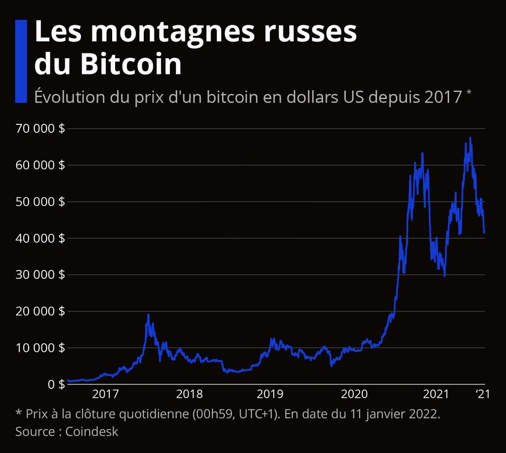

Placement parmi les titres spéculatifs
Avant d’aller plus loin, revoyons quelques éléments.
Qu’est-ce que la spéculation ?
La spéculation est une opération
financière qui a pour but de
réaliser un gain d’argent
en pariant sur la fluctuation des cours du marché. En
clair,
c’est anticiper et essayer de
prévoir l’évolution à court,
moyen ou long terme d’un prix, dans le but d’en tirer une plus-value ou un bénéfice.
Qu’est-ce qu’une bulle spéculative ?
Une bulle spéculative se crée
lorsque le prix d’un actif
augmente en continu, de
manière excessive et de telle sorte qu’il s’éloigne de
sa valeur réelle. Cette bulle est
alimentée par des comportements
spéculatifs, c’est-à-dire des individus qui investissent dans des actifs dont ils
anticipent
que les prix vont continuer
d’augmenter. Seulement, à l’occasion d’un événement,
la bulle
spéculative est suivie d’un
retournement des anticipations
et une chute brutale des prix.
Mais quel est le rapport avec le bitcoin ?
Le bitcoin est une
cryptomonnaie qui est très
sensible aux bulles
spéculatives, on parle ainsi de bulles de crypto monnaies ou bulle Bitcoin.
Quelles sont les spéculations sur le Bitcoin ?
Depuis sa création en 2009, le cours du bitcoin fluctue très
régulièrement mais a tout de
même atteint des valeurs dans
les extremums.
journaldunet.fr
- 